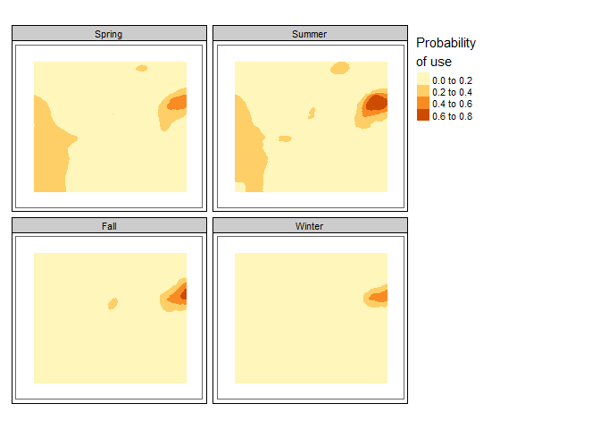

The caribouMetrics R package provides reproducible and open source implementations of several models of Boreal woodland caribou (Rangifer tarandus caribou) demography and habitat use. These include a population and demographic model that allows users to predict demographic rates for a given level of disturbance and project population growth over time. Demographic rates are predicted using model coefficients published in Johnson et. al. (2020). Population growth is projected using a two-stage demographic model with density dependence and interannual variability based on Johnson et. al. (2020) but with some modifications as described in Dyson et al. (2022). In addition to these national scale models, we provide a simple Bayesian integrated population model that integrates prior information from national analysis of demographic-disturbance relationships with available local demographic data to reduce uncertainty in population viability projections. Our model is an extension of work by Eacker et al. (2019) with some modifications and an added ability to simulate observation data given parameters that define a common caribou monitoring program. Finally, caribouMetrics contains a set of functions which implement the caribou resource selection probability functions (RSPF) for Ontario boreal caribou ranges described in Hornseth and Rempel (2016).
Installation
You can install the development version from GitHub with:
# install.packages("devtools")
devtools::install_github("LandSciTech/caribouMetrics")Example
This is a basic example demonstrating all the primary functions of the package.
library(caribouMetrics)
#> The legacy packages maptools, rgdal, and rgeos, underpinning the sp package,
#> which was just loaded, will retire in October 2023.
#> Please refer to R-spatial evolution reports for details, especially
#> https://r-spatial.org/r/2023/05/15/evolution4.html.
#> It may be desirable to make the sf package available;
#> package maintainers should consider adding sf to Suggests:.
#> The sp package is now running under evolution status 2
#> (status 2 uses the sf package in place of rgdal)
pthBase <- system.file("extdata", package = "caribouMetrics")
# load example data
landCoverD <- terra::rast(file.path(pthBase, "landCover.tif"))
# convert PLC classes to resource types used in the model
landCoverD <- reclassPLC(landCoverD)
eskerDras <- terra::rast(file.path(pthBase, "eskerTif.tif"))
eskerDshp <- sf::read_sf(file.path(pthBase, "esker.shp"))
natDistD <- terra::rast(file.path(pthBase, "natDist.tif"))
anthroDistD <-terra::rast(file.path(pthBase, "anthroDist.tif"))
linFeatDras <- terra::rast(file.path(pthBase, "linFeatTif.tif"))
projectPolyD <- sf::read_sf(file.path(pthBase, "projectPoly.shp"))
# calculate disturbance
disturb <- disturbanceMetrics(landCover = landCoverD,
linFeat = linFeatDras,
natDist = natDistD,
projectPoly = projectPolyD)
#> cropping landCover to extent of projectPoly
#> cropping linFeat to extent of projectPoly
#> cropping natDist to extent of projectPoly
#> buffering anthropogenic disturbance
#> calculating disturbance metrics
disturb_tbl <- results(disturb)
# Calculate demographic rates
demCoefs <- demographicCoefficients(replicates = 10)
demRates <- demographicRates(covTable = disturb_tbl,
popGrowthPars = demCoefs)
#> popGrowthPars contains quantiles so they are used instead of the defaults
#> popGrowthPars contains quantiles so they are used instead of the defaults
demRates
#> zone Anthro Fire Total_dist fire_excl_anthro FID S_bar S_stdErr
#> 1 1 39.86675 1.732936 40.45363 0.5868729 0 0.8479506 0.05405621
#> S_PIlow S_PIhigh R_bar R_stdErr R_PIlow R_PIhigh
#> 1 0.7487979 0.9302797 0.1816836 0.09490028 0.06382286 0.3828127
# Simulate population growth
popGrow <- caribouPopGrowth(N = 2000, numSteps = 20, R_bar = demRates$R_bar,
S_bar = demRates$S_bar)
popGrow
#> N0 lambda N R_t S_t n_recruits surviving_adFemales
#> 1 2000 0.9200186 376 0.1803221 0.8396411 22 354
# simulate caribou collar observations
params <- getScenarioDefaults(
iAnthro = disturb_tbl$Anthro, iFire = disturb_tbl$Fire,
collarCount = 30, cowMult = 3,
obsAnthroSlope = 0, projAnthroSlope = 1, projYears = 10, obsYears = 10
)
simObs <- simulateObservations(params, printPlot = TRUE)
ipm <- caribouBayesianIPM(simObs$simSurvObs, simObs$ageRatioOut,
simObs$simDisturbance,
# only set to speed up vignette. Normally keep defaults.
Niter = 150, Nburn = 100)
#> using Kaplan-Meier survival model
natSim <- getSimsNational(Anthro = unique(simObs$simDisturbance$Anthro))
#> Warning: Setting expected survival S_bar to be between l_S and h_S.
ipmTbls <- getOutputTables(ipm, paramTable = simObs$paramTable,
exData = simObs$exData,
simNational = natSim)
plotRes(ipmTbls, c("Recruitment", "Adult female survival"))
#> $Recruitment
#> Warning: Removed 10 rows containing missing values (`geom_point()`).
#>
#> $`Adult female survival`
#> Warning: Removed 11 rows containing missing values (`geom_point()`).
# Calculate habitat use in Ontario's Churchill range
carHab1 <- caribouHabitat(
landCover = landCoverD,
esker = eskerDras,
natDist = natDistD,
anthroDist = anthroDistD,
linFeat = linFeatDras,
projectPoly = projectPolyD,
caribouRange = "Churchill"
)
#> cropping landCover to extent of projectPoly
#> cropping linFeat to extent of projectPoly
#> cropping natDist to extent of projectPoly
#> cropping anthroDist to extent of projectPoly
#> cropping esker to extent of projectPoly
#> resampling linFeat to match landCover resolution
#> resampling esker to match landCover resolution
#> Applying moving window.
# plot the results
plot(carHab1)
Resources
The package website contains information on the caribouMetrics package. Here you can find documentation for each function and the following articles/vignettes/tutorials:
- Demographic Model: Predict demographic rates and population growth based on their relationship to habitat disturbance.
- Bayesian Demographic Projection: Project demographic rates and population growth based on the national demographic model and local caribou observations.
- Disturbance Metrics: Calculate buffered anthropogenic disturbance and fire disturbance percentages for a given area.
- Ontario Habitat Model: Calculate caribou habitat use with Ontario RSF models.
- User Interface Help: Instructions for using the SyncroSim user interface for integrating SpaDES, LandR and FireSense projections with caribou habitat and demographic models (WIP)
Getting help
If you have any questions about the caribouMetrics package or suggestions for improving it, please post an issue on the code repository.
References
Dyson, M., Endicott, S., Simpkins C., Turner, J.W., Avery-Gomm S., Johnson, C.A., Leblond, M., Neilson, E.W., Rempel, R., Wiebe, P.A., Baltzer, J.L., Stewart, F.E.C., Hughes, J. 2022. Existing caribou habitat and demographic models are poorly suited for Ring of Fire impact assessment: A roadmap for improving the usefulness, transparency, and availability of models for conservation. bioRxiv 2022.06.01.494350; https://doi.org/10.1101/2022.06.01.494350
Eacker, D.R., Hebblewhite, M., Steenweg, R., Russell, M., Flasko, A. and Hervieux, D., 2019. Web‐based application for threatened woodland caribou population modeling. Wildlife Society Bulletin, 43(1), pp.167-177. https://doi.org/10.1002/wsb.950
ECCC. 2011. Scientific assessment to inform the identification of critical habitat for woodland caribou (Rangifer tarandus caribou), boreal population, in Canada. Canadian Wildlife Service, Ottawa. http://epe.lac-bac.gc.ca/100/200/301/environment_can/2011/scientific_assessment_inform-ef/CW66-296-2011-eng.pdf. Accessed 26 Mar 2021.
Hornseth, M.L. and Rempel, R.S., 2016. Seasonal resource selection of woodland caribou (Rangifer tarandus caribou) across a gradient of anthropogenic disturbance. Canadian Journal of Zoology, 94(2), pp.79-93. https://doi.org/10.1139/cjz-2015-0101
Johnson, C.A., Sutherland, G.D., Neave, E., Leblond, M., Kirby, P., Superbie, C. and McLoughlin, P.D., 2020. Science to inform policy: linking population dynamics to habitat for a threatened species in Canada. Journal of Applied Ecology, 57(7), pp.1314-1327. https://besjournals.onlinelibrary.wiley.com/doi/full/10.1111/1365-2664.13637
License
caribouMetrics - Terms and Condition of Use
Unless otherwise noted, source code of the caribouMetrics R package is covered under Crown Copyright, Government of Canada, and distributed under the GPL3 license.
Copyright (C) Her Majesty the Queen in Right of Canada as represented by the Minister of the Environment 2021/(C) Sa Majesté la Reine du chef du Canada représentée par le ministre de l’Environnement 2021.